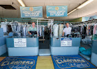

Dry Cleaning
Suits, dresses, jackets, blouses, slacks, uniforms, and delicate garments cleaned with professional attention.
San Clemente dry cleaning since 1981
Bonded Cleaners handles dry cleaning, laundry, pressing, and alterations with the steady attention of a local shop that has been caring for clothes for generations.
A longtime local cleaner
For more than 40 years, Bonded Cleaners has served San Clemente customers who want dependable garment care without fuss. Bring in everyday workwear, special occasion pieces, uniforms, linens, and the items you simply want handled right.
Services
Suits, dresses, jackets, blouses, slacks, uniforms, and delicate garments cleaned with professional attention.
Wash-and-fold care for everyday pieces, shirts, household linens, and recurring family laundry needs.
Crisp finishing for shirts, pants, formalwear, and pieces that need to look sharp for work or events.
Hems, minor repairs, fit adjustments, buttons, and garment fixes that help favorite pieces last longer.
How we treat garments
Every order is checked in, sorted by care needs, finished for a clean presentation, and returned with the kind of consistency people expect from a cleaner that has been around awhile.

Since 1981
Bonded Cleaners began serving local customers with reliable dry cleaning and garment care.
Customers return because the work is steady, the service is straightforward, and clothes come back ready.
The shop continues to handle everyday wardrobe care and important pieces for San Clemente families and professionals.
Visit Bonded Cleaners